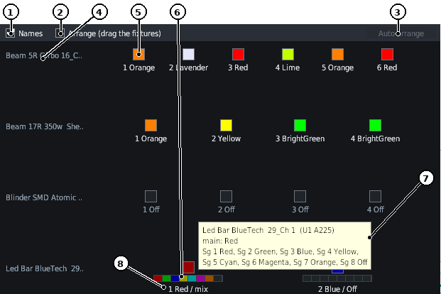

For: FullPlayer
A window, always in front, with every fixture of the project as on the stage and its colours live: what goes out
on DMX now, from any button, Sound2Light, the Show or the Web Remote. At an event you see at once which light is which
colour, and each segment of an LED bar or the ring of a wash too. Open it with Options > Monitor
settings > Stage View > Enable (see The Monitor), or with the command
showfrm(frmstageview) in the Command Line or a macro. Its X closes it and unticks Enable. Move it and size it
as you like (on a second screen too): its place and size are remembered, and it opens again at the next start if it was
open.

A copy of Andrei with two LED bars of 8 segments added: Curcubeu running on the beams, the bars set from the Command Line, the mouse on the first bar.
| 1 | Names: the names under the fixtures and the groups' names on the left; untick it to see only the colours. Remembered. |
| 2 | Arrange (drag the fixtures): only while it is ticked the fixtures can be dragged with the mouse (a yellow frame around each), so nothing moves by mistake at an event. Off every time the window opens. |
| 3 | Auto arrange (with Arrange ticked): a row for every group, in the order of the patch, the fixtures left to right by their address - as the projects are built. |
| 4 | The group. |
| 5 | The square: the beam of the fixture - the colour of its colour wheel (the name written in its .lfi2: Red, Lavender, WhiteXeon ...), or its Red / Green / Blue / White / Amber mixed; a fixture with a dimmer only is white. As the real light: as bright as its dimmer (at 40 % it looks at 40 %); no colour (dark grey, Off) when its dimmer is 0 or its shutter closed; on strobe it flashes, faster or slower by the strobe channel (up to 12 flashes a second; the name stays under it). |
| 6 | The bar: the LED segments / colour sections of the fixture, one cell each, in their order - the same sections as in the colour table of New Fixture with "show-ready" (BackGround, Ring, Sg 1 ... Sg 8, a second set of the same colours ...). A section's own dimmer counts (Ring Dimmer), else the fixture's. |
| 7 | The mouse on a fixture: all of it - group, number, universe and address, the beam's colour and each section's. |
| 8 | Its number in the group and the colours' names: the beam / the sections (mix when the sections have different colours). A program of the fixture running (its Programs / Macro channel) is written under it in yellow ("Prog: Fade all colors"): those colours are made by the fixture itself and do not come on DMX. |
The first time, the fixtures are arranged by themselves (as Auto arrange). The places you drag
them to are the project's: they are saved with it, in its S2L.dat (the same file as Sound2Light's lists) -
the original LumiDMX opens the project as before. A fixture added later goes at the bottom, in the middle: drag it where
it is, or press Auto arrange.
.lfi2 profiles: a fixture whose profile was not found shows only what
the program knows of its channels.